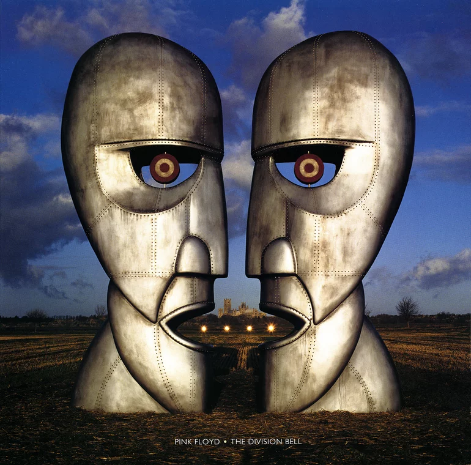
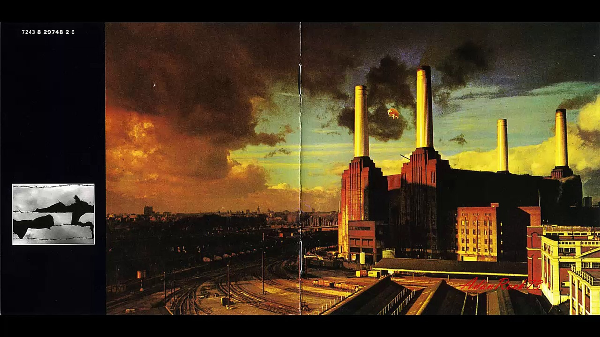

<!-- Crear un carrusel de imágenes que se desplace automáticamente cada cierto tiempo -->
<div id="carrusel">
    
    
    
</div>

<script>
    var carrusel = document.getElementById("carrusel");
    var imagenes = carrusel.getElementsByTagName("img");
    var indice = 0;

    setInterval(function () {
        imagenes[indice].style.display = "none"; // Oculta la imagen actual

        indice++;
        if (indice >= imagenes.length) {
            indice = 0;
        }

        imagenes[indice].style.display = "block"; // Muestra la siguiente imagen
    }, 2000); // Cambia de imagen cada 3 segundos (3000 milisegundos)
</script>